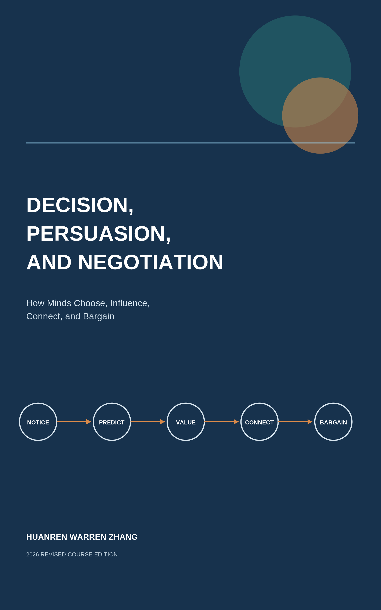

Decision, Persuasion, and Negotiation
How Minds Choose, Influence, Connect, and Bargain

Textbook on decision-making, influence, communication, negotiation, and better decision systems.
Start Here
How to use this textbook as a cumulative course rather than a catalogue of effects
A visible decision is usually the end of a hidden process. Attention has selected evidence, a predictive model has interpreted it, valuation has made some outcomes matter, social cues have changed what feels normal, and previous choices may already have become habits. The book therefore begins upstream and moves outward—from one mind, to other minds, to joint decisions and decision systems.
The organizing logic
| Part | Central movement | What students should be able to do |
|---|---|---|
| I. The Architecture of Choice | From the visible choice to the hidden processes of attention, prediction, valuation, and expectation. | What happens before a visible choice? |
| II. Judgment Under Uncertainty and Context | How shortcuts, statistics, comparison sets, frames, and fluency shape what seems true and worth doing. | When do heuristics fit the environment? |
| III. How Choices Become Stories and Habits | How post-choice explanation, repetition, craving, and environment design shape behavior over time. | Why can sincere explanations miss the cause? |
| IV. The Social Mind | How other people become models, mirrors, evidence, audiences, norms, and authorities. | When are other people good evidence? |
| V. Persuasion, Story, and Connection | How messages update models, stories create simulated meaning, and conversation builds shared understanding. | What prevents an audience from updating? |
| VI. Negotiation: Claiming and Creating Value | How interdependent decision-makers prepare, bargain, trade across differences, and design workable agreements. | What is my alternative and walk-away point? |
| VII. Better Decision Systems | How to make good judgment repeatable through decision hygiene, structured disagreement, and learning. | What should be noticed, tested, asked, designed, and learned? |
How to read a chapter
- Begin with the opening case. Make a prediction before reading the explanation.
- Use the figure as a model, not decoration. Explain every arrow or distinction in your own words.
- Interrogate the evidence. Distinguish an established pattern from a context-sensitive or contested claim.
- Work the table or tool. Apply it to a decision from work, study, public life, or negotiation.
- Finish with Experience–Explain–Apply. Use no more than 120 words: one concrete experience, one or two concepts, and one improvement or testable prediction.
Scientific and citation policy
The text uses APA-style author–date citations. Every chapter ends with only the works cited in that chapter; the master bibliography is the deduplicated union of those lists. Effects with important boundary conditions—such as social priming, stereotype-related performance effects, watched-eyes cues, and some mindset interventions—are explicitly qualified rather than presented as universal laws.
Suggested routes
- Full course: read in order. The sequence is cumulative.
- Decision unit: Chapters 1–21.
- Influence and communication unit: Chapters 22–29.
- Negotiation unit: Chapters 30–35, with Chapters 1–3, 7, 13–15, 23–25, and 28–29 as foundations.
- Exam review: use Appendix B to locate major examples and Appendix A to rehearse the portable tools.